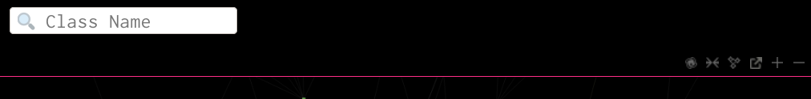
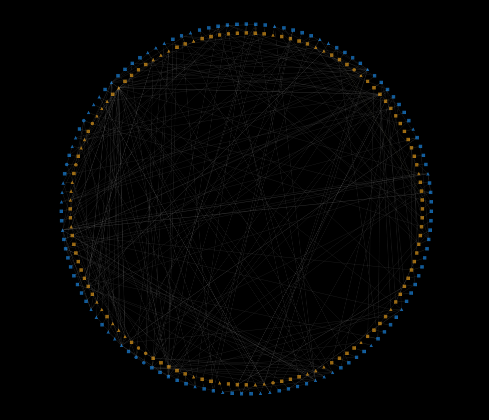
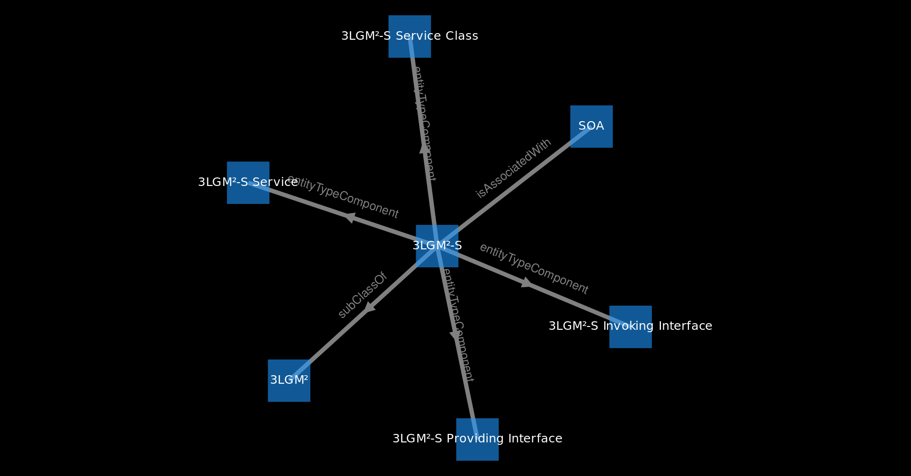
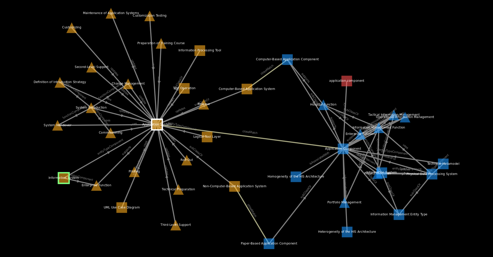
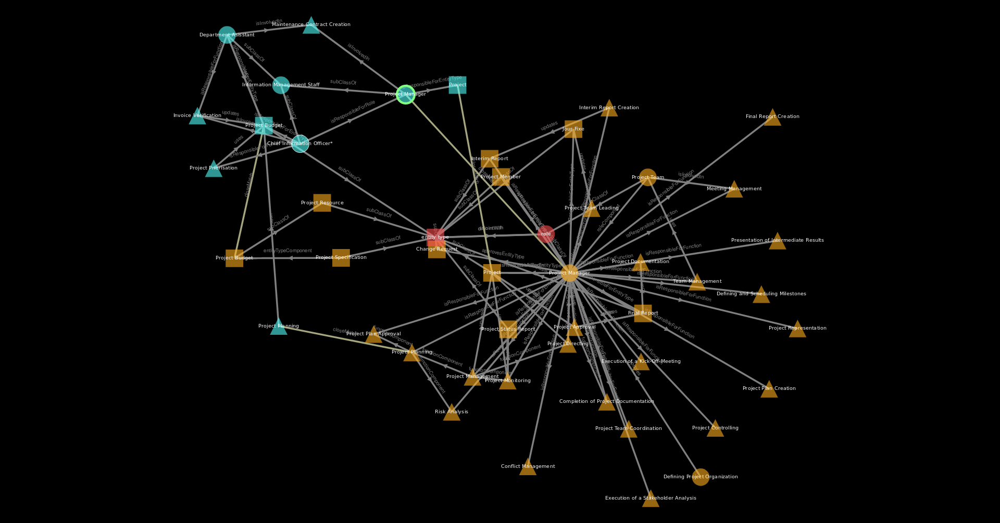
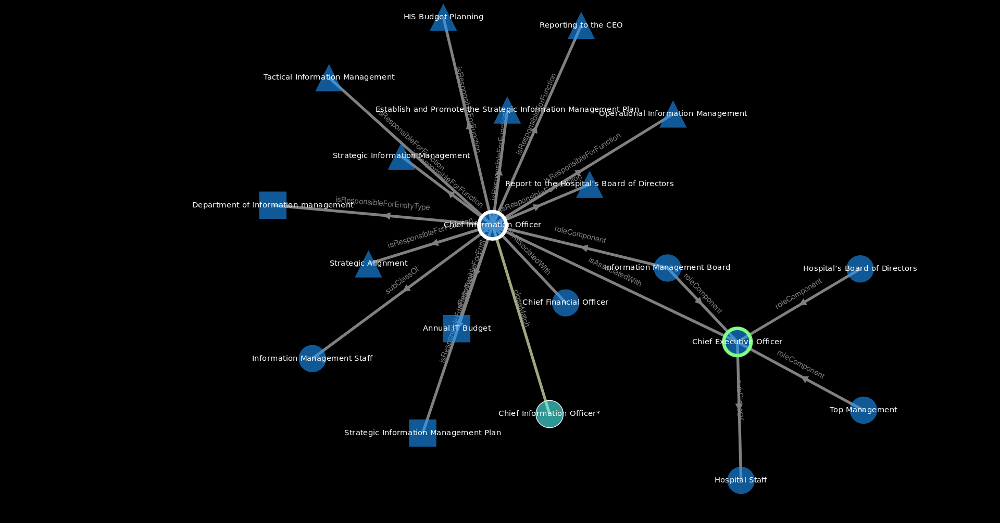
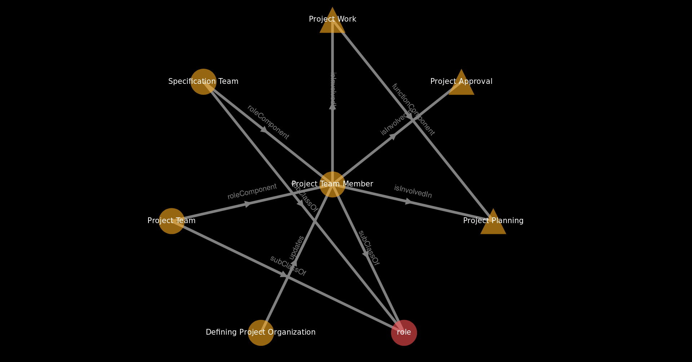

| Term | Synonyms | Meaning |
|---|---|---|
| Main Graph | Main Model | first tab with the initially visible subset and default layout |
| Partial Graph | View, Tab, Partial Model | further tabs with custom subsets of the graph |
| Current View | the part of the currently shown graph (view, tab) that is currently visible on screen | |
| Session | layout and visibility state of all graphs (tabs), can be saved and loaded |






